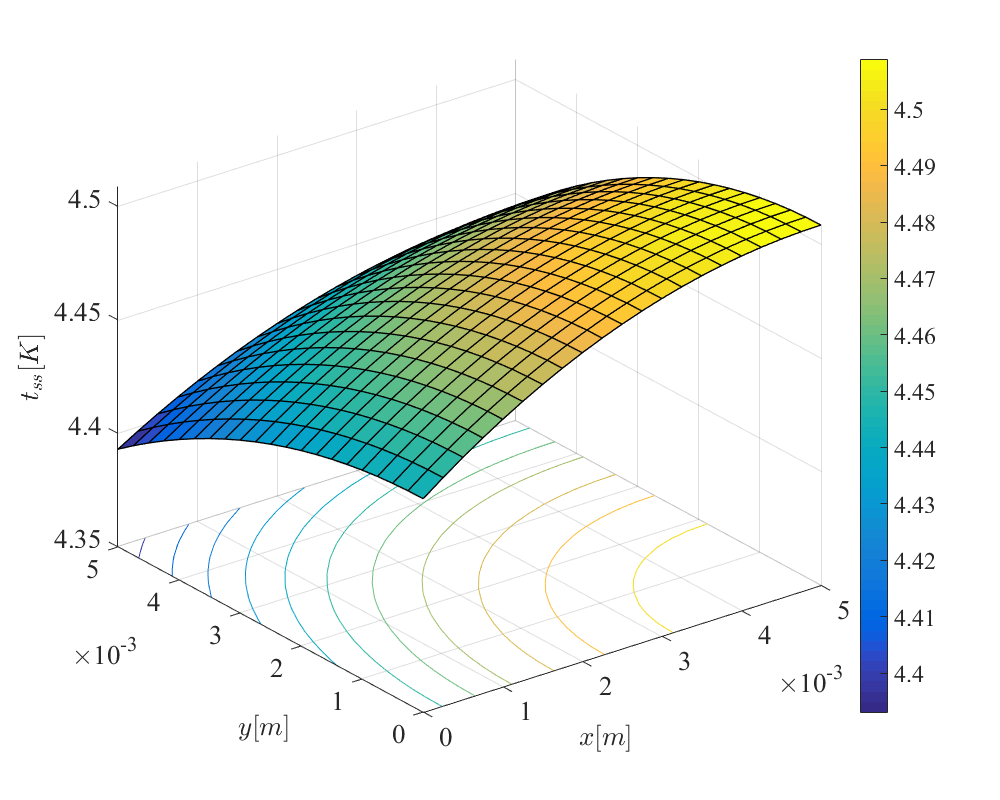
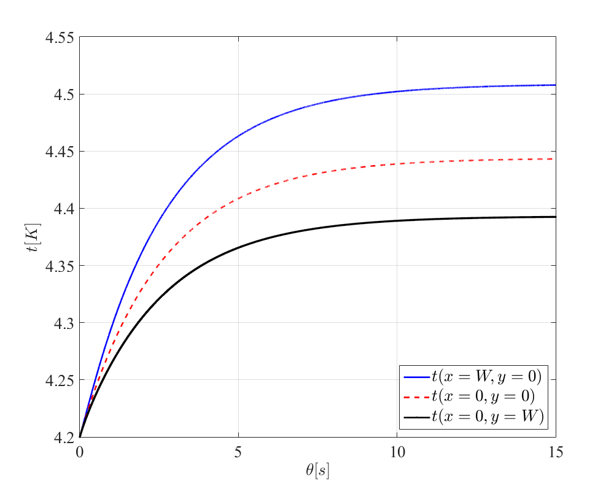
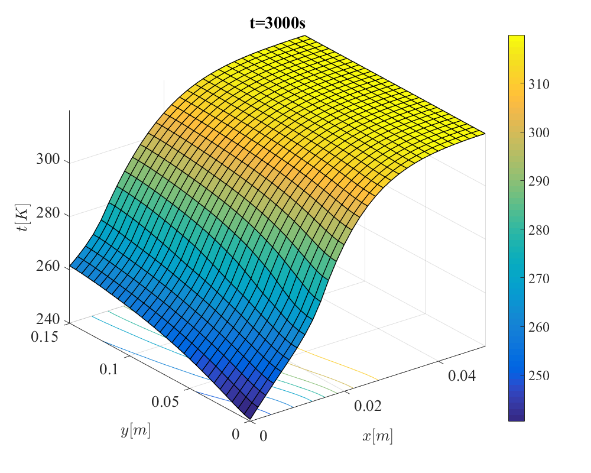
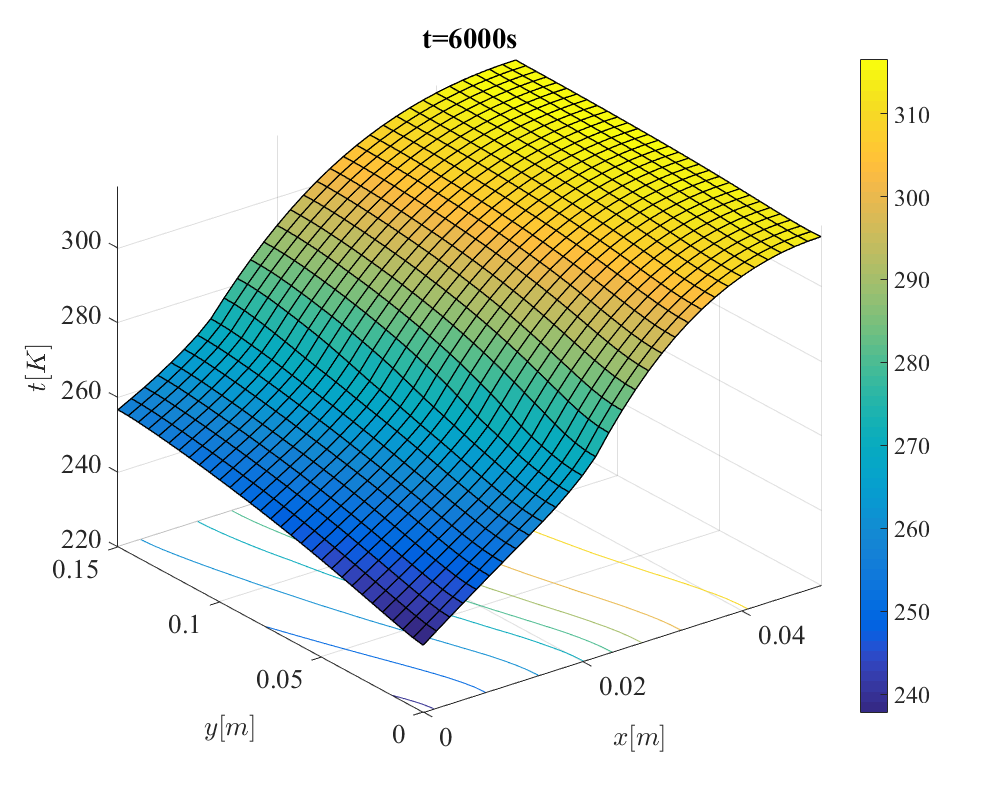
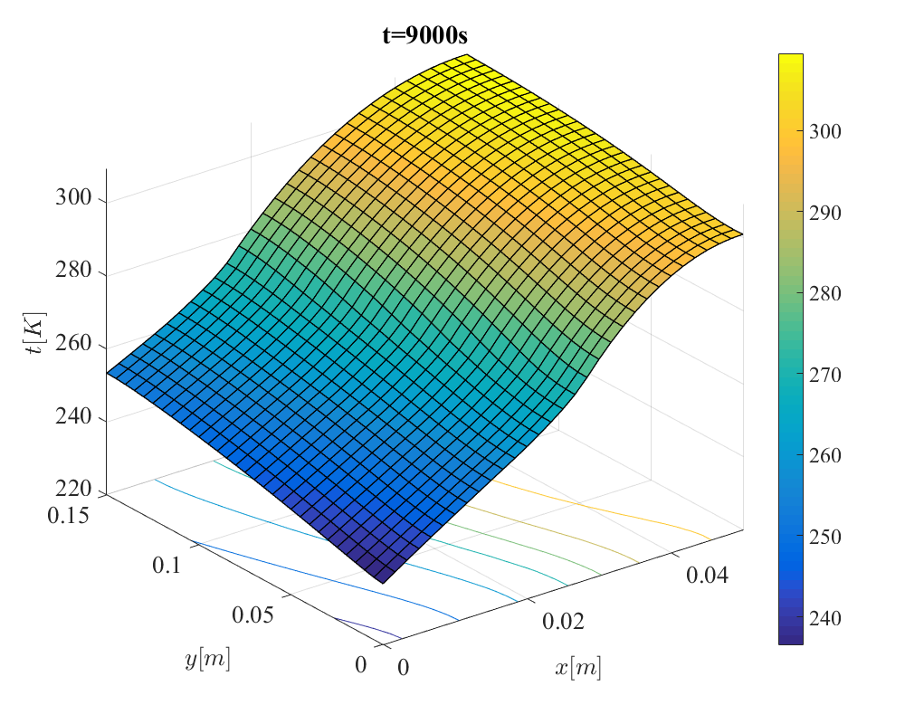
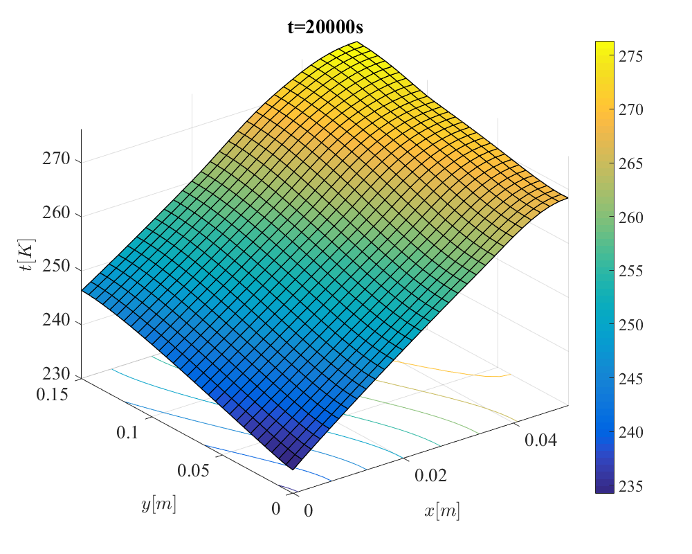
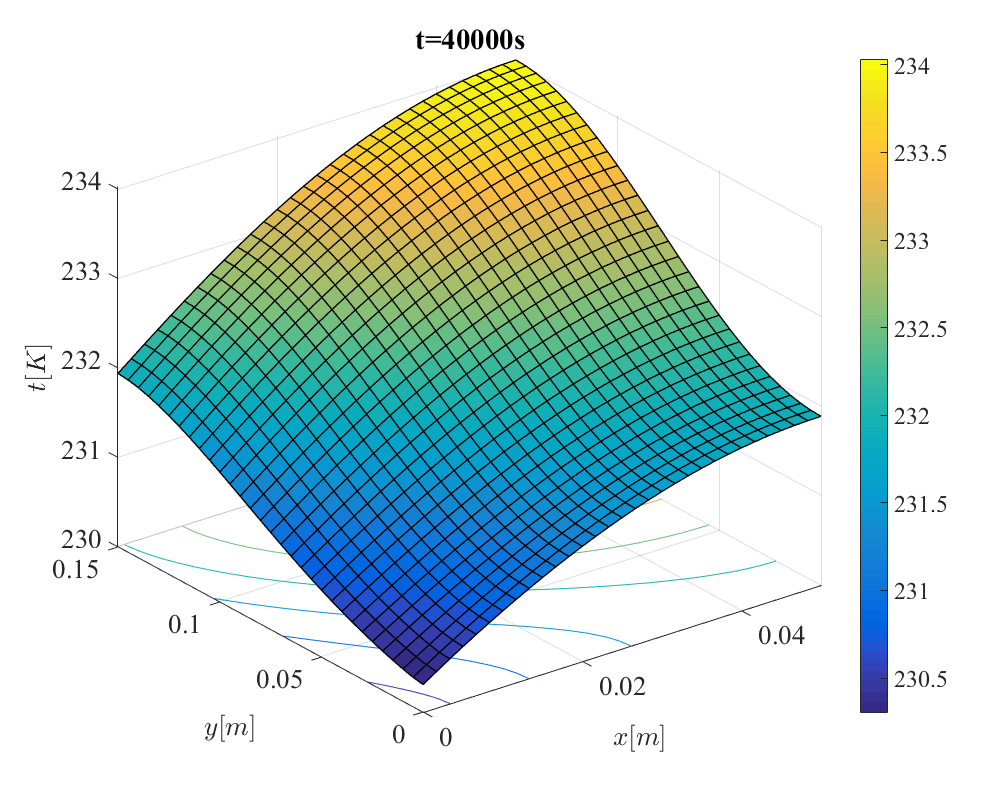
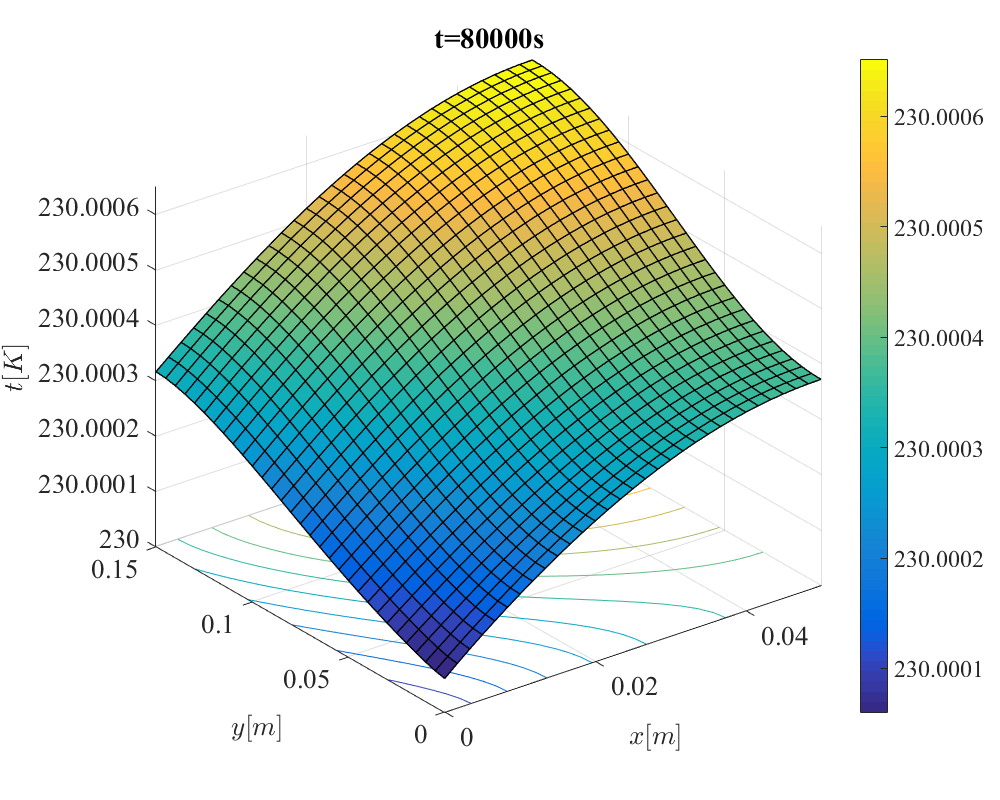

Contents
clear
clc
close all
Part1
W = 0.005;
h = 1100;
tinf = 4.2;
k = 10;
rho = 8000;
c = 120;
gdd = 1E5;
a)
M = 3;
N = 3;
dx = W/(M-1);
dy = W/(N-1);
C = Cmake(M,N,rho,c,dx,dy);
K = Kmake(M,N,k,dx,dy);
H = Hmake(M,N,h,dx,dy);
Tinf = tinfmake(M,N,tinf);
g = gmake(M,N,dx,dy,gdd);
C
K
H
Tinf
g
C =
Columns 1 through 7
1.5000 0 0 0 0 0 0
0 3.0000 0 0 0 0 0
0 0 1.5000 0 0 0 0
0 0 0 3.0000 0 0 0
0 0 0 0 6.0000 0 0
0 0 0 0 0 3.0000 0
0 0 0 0 0 0 1.5000
0 0 0 0 0 0 0
0 0 0 0 0 0 0
Columns 8 through 9
0 0
0 0
0 0
0 0
0 0
0 0
0 0
3.0000 0
0 1.5000
K =
10 -5 0 -5 0 0 0 0 0
-5 20 -5 0 -10 0 0 0 0
0 -5 10 0 0 -5 0 0 0
-5 0 0 20 -10 0 -5 0 0
0 -10 0 -10 40 -10 0 -10 0
0 0 -5 0 -10 20 0 0 -5
0 0 0 -5 0 0 10 -5 0
0 0 0 0 -10 0 -5 20 -5
0 0 0 0 0 -5 0 -5 10
H =
Columns 1 through 7
1.3750 0 0 0 0 0 0
0 0 0 0 0 0 0
0 0 0 0 0 0 0
0 0 0 2.7500 0 0 0
0 0 0 0 0 0 0
0 0 0 0 0 0 0
0 0 0 0 0 0 2.7500
0 0 0 0 0 0 0
0 0 0 0 0 0 0
Columns 8 through 9
0 0
0 0
0 0
0 0
0 0
0 0
0 0
2.7500 0
0 1.3750
Tinf =
4.2000
0
0
4.2000
0
0
4.2000
4.2000
4.2000
g =
0.1563
0.3125
0.1563
0.3125
0.6250
0.3125
0.1563
0.3125
0.1563
b)
M = 21;
N = 21;
dx = W/(M-1);
dy = W/(N-1);
C = Cmake(M,N,rho,c,dx,dy);
K = Kmake(M,N,k,dx,dy);
H = Hmake(M,N,h,dx,dy);
Tinf = tinfmake(M,N,tinf);
g = gmake(M,N,dx,dy,gdd);
S = K+H;
r = H*Tinf+g;
tss = S\r;
Tss = reshape(tss,[M,N]);
figure(1)
surfc(0:dx:W,0:dy:W,Tss','LineWidth',1)
xlim([0 W])
ylim([0 W])
colorbar
set(gcf,'position',[200,300,1000,800])
xlabel({'$x[m]$'},'FontSize',20,'Interpreter','Latex');
ylabel({'$y[m]$'},'FontSize',20,'Interpreter','Latex');
zlabel({'$t_{ss}[K]$'},'FontSize',20,'Interpreter','Latex');
set(gca, 'FontName','Times New Roman','FontSize', 20)

c)
thetac = 2/max(sum(abs(S),2)./diag(C));
thetac
thetac =
0.0015
d)
thetaeq = W*2.197/(h/(rho*c));
thetaeq
thetaeq =
9.5869
e)
dtheta = thetac/2;
tini = tinf*ones(M*N,1);
A = C+S*dtheta/2;
B = C-S*dtheta/2;
b = r*dtheta;
nstep = floor(15/dtheta)+1;
tt = zeros(M*N,nstep);
tt(:,1) = tini;
for thetas=1:1:nstep-1
tt(:,thetas+1) = A\(B*tt(:,thetas)+b);
end
figure(2)
plot(0:dtheta:dtheta*(nstep-1),tt(M,:),'b-','LineWidth',2);
hold on;
plot(0:dtheta:dtheta*(nstep-1),tt(1,:),'r--','LineWidth',2);
hold on;
plot(0:dtheta:dtheta*(nstep-1),tt(M*(N-1)+1,:),'k.-','LineWidth',2);
hold on;
grid on;
set(gcf,'position',[200,300,1000,800])
xlim([0 dtheta*(nstep-1)])
xlabel({'${\theta}[s]$'},'FontSize',20,'Interpreter','Latex');
ylabel({'$t[K]$'},'FontSize',20,'Interpreter','Latex');
legend({'$t(x=W,y=0)$','$t(x=0,y=0)$','$t(x=0,y=W)$'},'Location','southeast','FontSize',20,'Interpreter','Latex');
set(gca, 'FontName','Times New Roman','FontSize', 20)

f)
order = 6;
[X,lambda] = eigs(S,C,order,'SM');
for i=1:1:order
b(i) = X(:,i)'*C*(tini-tss);
end
te = zeros(M*N,nstep);
for thetas=1:1:nstep
theta = (thetas-1)*dtheta;
for j=1:1:order
te(:,thetas) = te(:,thetas) + b(j)*X(:,j)*exp(-lambda(j,j)*theta);
end
te(:,thetas) = te(:,thetas) + tss;
end
figure(3)
plot(0:dtheta:dtheta*(nstep-1),tt(M,:),'b-','LineWidth',2);
hold on;
plot(0:dtheta:dtheta*(nstep-1),tt(1,:),'r-','LineWidth',2);
hold on;
plot(0:dtheta:dtheta*(nstep-1),tt(M*(N-1)+1,:),'k-','LineWidth',2);
hold on;
plot(0:dtheta:dtheta*(nstep-1),te(M,:),'b--','LineWidth',4);
hold on;
plot(0:dtheta:dtheta*(nstep-1),te(1,:),'r--','LineWidth',4);
hold on;
plot(0:dtheta:dtheta*(nstep-1),te(M*(N-1)+1,:),'k--','LineWidth',4);
hold on;
grid on;
set(gcf,'position',[200,300,1000,800])
xlim([0 dtheta*(nstep-1)])
xlabel({'${\theta}[s]$'},'FontSize',20,'Interpreter','Latex');
ylabel({'$t[K]$'},'FontSize',20,'Interpreter','Latex');
legend({'$t(x=W,y=0)$','$t(x=0,y=0)$','$t(x=0,y=W)$','$t_{e}(x=W,y=0)$','$t_{e}(x=0,y=0)$','$t_{e}(x=0,y=W)$'},'Location','southeast','FontSize',20,'Interpreter','Latex');
set(gca, 'FontName','Times New Roman','FontSize', 20)

Part2
W = 0.05;
L = 0.15;
tinf = 230;
tini = 320;
hfd = 10;
dhdev = 500;
beta = 5;
rho = 3200;
a)
M = 31;
N = 31;
dx = W/(M-1);
dy = L/(N-1);
H = Hymake(M,N,hfd,dhdev,beta,dx,dy,L);
Tinf = tinfset(M,N,tinf);
dtheta = 10;
ttheta = 80000;
nstep = floor(ttheta/dtheta)+1;
tt = zeros(M*N,nstep);
tt(:,1) = tini*ones(M*N,1);
for thetas=1:1:nstep-1
C = Ctmake(M,N,rho,dx,dy,tt(:,thetas));
K = Ktmake(M,N,k,dx,dy,tt(:,thetas));
S = K+H;
r = H*Tinf;
A = C+S*dtheta/2;
B = C-S*dtheta/2;
b = r*dtheta;
tt(:,thetas+1) = A\(B*tt(:,thetas)+b);
end
figure(4)
surfc(0:dx:W,0:dy:L,reshape(tt(:,floor(3000/dtheta)+1),[M,N])','LineWidth',1)
xlim([0 W])
ylim([0 L])
colorbar
set(gcf,'position',[200,300,1000,800])
xlabel({'$x[m]$'},'FontSize',20,'Interpreter','Latex');
ylabel({'$y[m]$'},'FontSize',20,'Interpreter','Latex');
zlabel({'$t[K]$'},'FontSize',20,'Interpreter','Latex');
title('t=3000s')
set(gca, 'FontName','Times New Roman','FontSize', 20)
figure(5)
surfc(0:dx:W,0:dy:L,reshape(tt(:,floor(6000/dtheta)+1),[M,N])','LineWidth',1)
xlim([0 W])
ylim([0 L])
colorbar
set(gcf,'position',[200,300,1000,800])
xlabel({'$x[m]$'},'FontSize',20,'Interpreter','Latex');
ylabel({'$y[m]$'},'FontSize',20,'Interpreter','Latex');
zlabel({'$t[K]$'},'FontSize',20,'Interpreter','Latex');
title('t=6000s')
set(gca, 'FontName','Times New Roman','FontSize', 20)
figure(6)
surfc(0:dx:W,0:dy:L,reshape(tt(:,floor(9000/dtheta)+1),[M,N])','LineWidth',1)
xlim([0 W])
ylim([0 L])
colorbar
set(gcf,'position',[200,300,1000,800])
xlabel({'$x[m]$'},'FontSize',20,'Interpreter','Latex');
ylabel({'$y[m]$'},'FontSize',20,'Interpreter','Latex');
zlabel({'$t[K]$'},'FontSize',20,'Interpreter','Latex');
title('t=9000s')
set(gca, 'FontName','Times New Roman','FontSize', 20)
figure(7)
surfc(0:dx:W,0:dy:L,reshape(tt(:,floor(20000/dtheta)+1),[M,N])','LineWidth',1)
xlim([0 W])
ylim([0 L])
colorbar
set(gcf,'position',[200,300,1000,800])
xlabel({'$x[m]$'},'FontSize',20,'Interpreter','Latex');
ylabel({'$y[m]$'},'FontSize',20,'Interpreter','Latex');
zlabel({'$t[K]$'},'FontSize',20,'Interpreter','Latex');
title('t=20000s')
set(gca, 'FontName','Times New Roman','FontSize', 20)
figure(8)
surfc(0:dx:W,0:dy:L,reshape(tt(:,floor(40000/dtheta)+1),[M,N])','LineWidth',1)
xlim([0 W])
ylim([0 L])
colorbar
set(gcf,'position',[200,300,1000,800])
xlabel({'$x[m]$'},'FontSize',20,'Interpreter','Latex');
ylabel({'$y[m]$'},'FontSize',20,'Interpreter','Latex');
zlabel({'$t[K]$'},'FontSize',20,'Interpreter','Latex');
title('t=40000s')
set(gca, 'FontName','Times New Roman','FontSize', 20)
figure(9)
surfc(0:dx:W,0:dy:L,reshape(tt(:,floor(80000/dtheta)+1),[M,N])','LineWidth',1)
xlim([0 W])
ylim([0 L])
colorbar
set(gcf,'position',[200,300,1000,800])
xlabel({'$x[m]$'},'FontSize',20,'Interpreter','Latex');
ylabel({'$y[m]$'},'FontSize',20,'Interpreter','Latex');
zlabel({'$t[K]$'},'FontSize',20,'Interpreter','Latex');
title('t=80000s')
set(gca, 'FontName','Times New Roman','FontSize', 20)
     